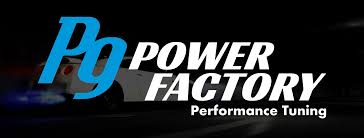

A preparação de carros franceses, ainda vem sendo considerado um "tabu" ao meio automotivo, mas hoje em dia, considerando o fato de que o mercado cresceu mais ainda, isso demandou o crescimento absoluto de oficinas especializadas no ramo, hoje em dia contamos com varias opções no mercado nacional, tanto para peças "aftermarket", como para peças originais de procedencia, tendo em base, uma grande evolução na área, confira abaixo, para verificar se o seu carro faz parte do grupo dos franceses aqui no Brasil.
Dentre vários outros preparadores, no mercado de carros franceses, hoje em dia um dos mais renomeados no mercado, é a "P9 Power Factory", que são responsaveis pela a parte de reprogramação de centrais, aonde pode-se extrair melhores resultados, sendo Thiago Silva, conhecido popularmente como "Pixel", o cabeça por tras de todo o cenário de incriveis resultados, principalmente quando se fala sobre o DS3

Desde que comprei meu DS3, sabia que tinha algo especial em minhas mãos. O carro já era uma mistura perfeita de estilo, desempenho e praticidade. Mas como qualquer entusiasta automotivo, sempre quis extrair mais daquela máquina. Depois de muita pesquisa e planejamento, decidi prepará-lo para alcançar a marca dos 300 cavalos de roda. E posso te dizer, foi a melhor decisão que já tomei em relação a um carro. O primeiro passo foi aprimorar o motor. Investi em um novo conjunto de pistões forjados, um turbo maior e um sistema de exaustão de alto desempenho. Com essas modificações, o DS3 respirava melhor, entregando uma potência mais consistente em todas as faixas de rotação. Mas não parou por aí. Atualizei a suspensão com amortecedores ajustáveis e molas esportivas, o que não só melhorou a dirigibilidade, mas também deu ao carro uma postura mais agressiva. Os pneus de alta performance foram essenciais para manter toda essa potência no chão, proporcionando uma aderência incrível em curvas e retas. E quando finalmente dei partida no motor após todas essas modificações, a sensação foi indescritível. O rugido do escapamento ecoava pelas ruas, anunciando a presença do meu DS3 preparado. Cada acelerada me empurrava de volta no banco, e a sensação de controle absoluto sobre o carro era viciante. Mas o que mais me surpreendeu foi como o carro ainda mantinha sua praticidade. Mesmo com toda essa potência, o DS3 continuava sendo um companheiro confiável para o dia a dia. Ainda podia fazer minhas corridas ao supermercado ou enfrentar o trânsito da cidade sem nenhum problema, mas sabia que tinha um monstro adormecido sob o capô esperando para ser acordado a qualquer momento. Hoje, cada vez que pego o volante do meu DS3 preparado, não consigo conter o sorriso no rosto. É mais do que um carro, é uma extensão de mim mesmo, uma máquina que me desafia a cada curva e me recompensa com cada acelerada. Não há nada como a sensação de estar no controle de um carro tão incrível, especialmente quando fui eu mesmo que o transformei nessa máquina dos sonhos.